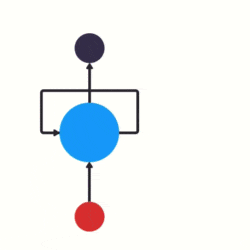
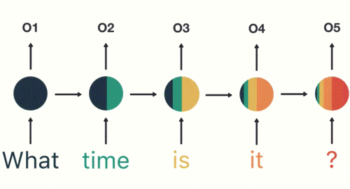
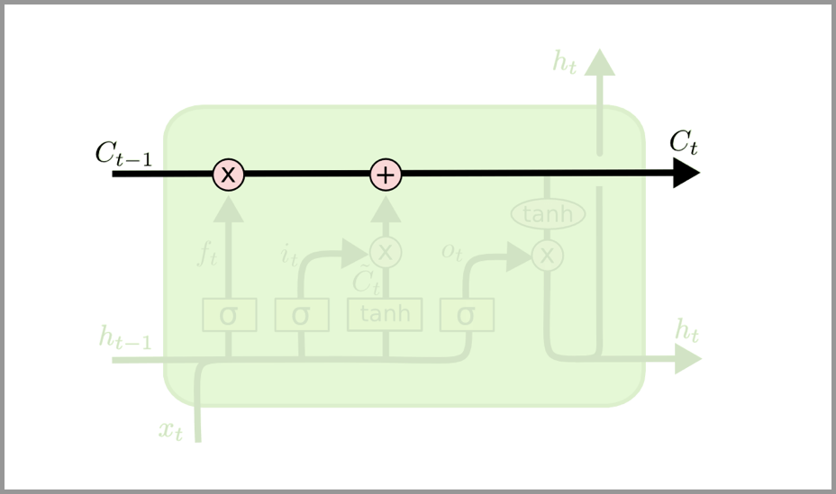
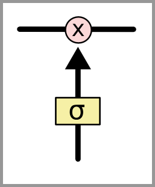

卷积神经网络 – CNN 已经很强大的，为什么还需要RNN？
接下来解释下 RNN 的独特价值——处理序列数据。同时还会说明 RNN 的一些缺陷和它的变种算法。
最后再介绍一下 RNN 的实际应用价值和使用场景。
为什么需要 RNN ？独特价值是什么？
卷积神经网络 – CNN 和普通的算法大部分都是输入和输出的一一对应，也就是一个输入得到一个输出。不同的输入之间是没有联系的。
但是在某些场景中，一个输入就不够了！
为了填好下面的空，取前面任何一个词都不合适，我们不但需要知道前面所有的词，还需要知道词之间的顺序。
这种需要处理「序列数据 – 一串相互依赖的数据流」的场景就需要使用 RNN 来解决了。
典型的集中序列数据：
- 文章里的文字内容
- 语音里的音频内容
- 股票市场中的价格走势
- ……
RNN 之所以能够有效的处理序列数据，主要是基于他的比较特殊的运行原理。下面给大家介绍一下 RNN 的基本运行原理。
RNN 的基本原理
传统神经网络的结构比较简单：输入层 – 隐藏层 – 输出层。如下图所示：

RNN 跟传统神经网络最大的区别在于每次都会将前一次的输出结果，带到下一次的隐藏层中，一起训练。如下图所示：

下面用一个具体的案例来看看 RNN 是如何工作的：
假如需要判断用户的说话意图（问天气、问时间、设置闹钟…），用户说了一句“what time is it？”我们需要先对这句话进行分词：
然后按照顺序输入 RNN ，我们先将 “what”作为 RNN 的输入，得到输出「01」

然后，我们按照顺序，将“time”输入到 RNN 网络，得到输出「02」。
这个过程我们可以看到，输入 “time” 的时候，前面 “what” 的输出也产生了影响（隐藏层中有一半是黑色的）。

以此类推，前面所有的输入都对未来的输出产生了影响，大家可以看到圆形隐藏层中包含了前面所有的颜色。如下图所示：

当我们判断意图的时候，只需要最后一层的输出「05」，如下图所示：

RNN 的缺点也比较明显

通过上面的例子，我们已经发现，短期的记忆影响较大（如橙色区域），但是长期的记忆影响就很小（如黑色和绿色区域），这就是 RNN 存在的短期记忆问题。
- RNN 有短期记忆问题，无法处理很长的输入序列
- 训练 RNN 需要投入极大的成本
由于 RNN 的短期记忆问题，后来又出现了基于 RNN 的优化算法，下面给大家简单介绍一下。
RNN 的优化算法
LSTM – 长短期记忆网络
一种特殊的 RNN，能够学习长期依赖性。由 Hochreiter 和 Schmidhuber（1997）提出的，并且在接下来的工作中被许多人改进和推广。LSTM 在各种各样的问题上表现非常出色，现在被广泛使用。
LSTM 做的最大的改变就是打破了这个死板的逻辑，而改用了一套灵活的逻辑——只保留重要的信息，它被明确设计用来避免长期依赖性问题。长时间记住信息实际上是 LSTM 的默认行为，而不是需要努力学习的东西！
相较于RNN 死板的逻辑，越晚的输入影响越大，越早的输入影响越小，且无法改变这个逻辑。
LSTM 却可以保留较长序列数据中的「重要信息」，忽略不重要的信息**。这样就解决了 RNN 短期记忆的问题。
LSTM相较于传统RNN网络的差异：
我们知道，所有递归神经网络都具有神经网络的链式重复模块。在标准的 RNN 中，这个重复模块具有非常简单的结构，例如只有单个 tanh 层。
LSTM 也具有这种类似的链式结构，但重复模块具有不同的结构。不是一个单独的神经网络层，而是四个，并且以非常特殊的方式进行交互。
不要担心细节。稍后我们将逐步浏览 LSTM 的图解。现在，让我们试着去熟悉我们将使用的符号。

在上面的图中，每行包含一个完整的向量，从一个节点的输出到其他节点的输入。粉色圆圈表示逐点运算，如向量加法；而黄色框表示学习的神经网络层。行合并表示串联，而分支表示其内容正在被复制，并且副本将转到不同的位置。
LSTM的核心思路
LSTM 的关键是细胞状态，即图中上方的水平线。
细胞状态有点像传送带。它贯穿整个链条，只有一些次要的线性交互作用。信息很容易以不变的方式流过。

LSTM 可以通过所谓“门”的精细结构向细胞状态添加或移除信息。
门可以选择性地以让信息通过。它们由 S 形神经网络层和逐点乘法运算组成。

S 形网络的输出值介于 0 和 1 之间，表示有多大比例的信息通过。0 值表示“没有信息通过”，1 值表示“所有信息通过”。
一个 LSTM 有三种这样的门用来保持和控制细胞状态。
如果对详细的技术原理感兴趣，可以看看这篇文章《Illustrated Guide to LSTM’s and GRU’s: A step by step explanation》
从 LSTM 到 GRU
Gated Recurrent Unit – GRU 是 LSTM 的一个变体。他保留了 LSTM 划重点，遗忘不重要信息的特点，在long-term 传播的时候也不会被丢失。
GRU 主要是在 LSTM 的模型上做了一些简化和调整，在训练数据集比较大的情况下可以节省很多时间。
RNN 的应用和使用场景
只要涉及到序列数据的处理问题，都可以使用到，NLP 就是一个典型的应用场景。
文本生成：类似上面的填空题，给出前后文，然后预测空格中的词是什么。
机器翻译：翻译工作也是典型的序列问题，词的顺序直接影响了翻译的结果。
语音识别：根据输入音频判断对应的文字是什么。
生成图像描述：类似看图说话，给一张图，能够描述出图片中的内容。这个往往是 RNN 和 CNN 的结合。
视频标记：他将视频分解为图片，然后用图像描述来描述图片内容。
总结
RNN的独特价值在于：它能有效的处理序列数据。比如：文章内容、语音音频、股票价格走势…
之所以他能处理序列数据，是因为在序列中前面的输入也会影响到后面的输出，相当于有了“记忆功能”。但是 RNN 存在严重的短期记忆问题，长期的数据影响很小（哪怕他是重要的信息）。
于是基于 RNN 出现了 LSTM 和 GRU 等变种算法。这些变种算法主要有几个特点：
- 长期信息可以有效的保留
- 挑选重要信息保留，不重要的信息会选择“遗忘”
RNN 几个典型的应用如下：
- 文本生成
- 语音识别
- 机器翻译
- 生成图像描述
- 视频标记
高山仰止 景行行止 虽不能至 心向往之
If you like this blog or find it useful for you, you are welcome to comment on it. You are also welcome to share this blog, so that more people can participate in it!